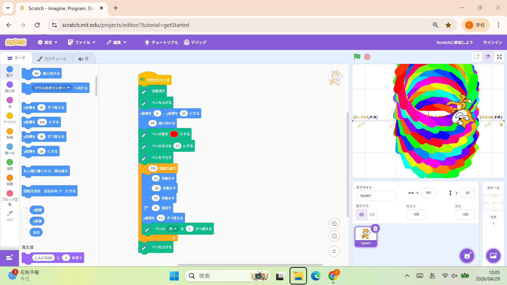
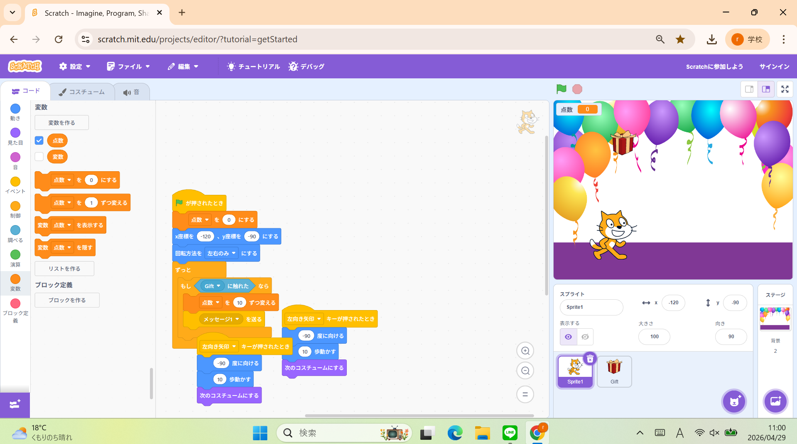

1週目のレポート ： 公大高専１年実習I-1
4a班16番 Yousay Horie
第1週目
1-1 サイエンスアート

1.内容
SCRATCHのペン機能を使い、円を描いた。スプライトの動きとペンの色彩を調整し、鮮やかな動作をしながら円を描いた。
2.感想
私は、高専に入る以前の時点で、プログラミングを学んでいたので、ある程度は理解することができました。
しかし、ペン機能については、あまり知らなかったので、新しいことを学ぶことができる良い機会となりました。
1-2 ゲーム

1.内容
上から物が落ちてくるので、それを猫（スプライト）がキャッチするというゲームを作りました。 上から落ちてくるものがランダムになるように乱数を使いました。
2.感想
講義内で行ったプログラムについては、以前個人で制作した経験がありました。
乱数を使うことで、上から物がランダムで落ちてくるという仕組みを詳しく知ることができました。
1-3 ホームページ作成
私のホームページ
1.内容
ホームページを制作しました。HTMLの単語を学び、画像の貼り方も学びました。ホームページには、自分の趣味やルーティーンを書きました。
2.感想
私は、以前からHTMLについて少しだけ触れていました。しかし、一つ一つの単語の意味をしっかりと理解できていませんでした。
しかし、この機会に多くを学ぶことができたので、これからの高専生活につなげようと思います。
各ページへのリンク
1週目のレポート
2週目のレポート
3週目のレポート
私のホームページ